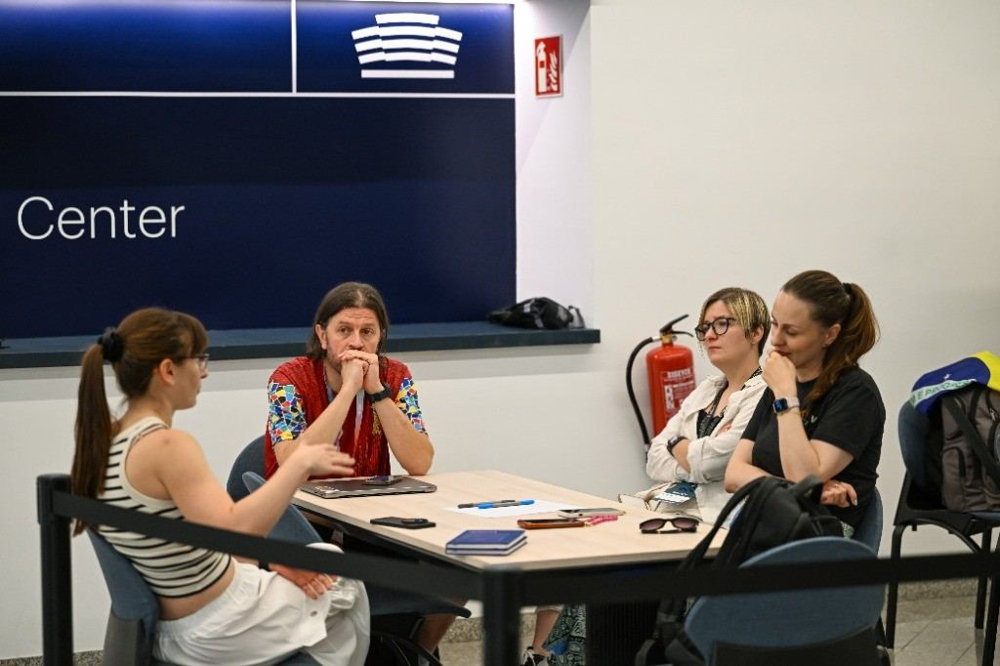

Conferences · Tech
DevBcn 2027
- Dates
- –
- Venue
- World Trade Center, Barcelona
- Location
- Barcelona, Spain
- Format
- In-person
- Category
- Tech
- Industry
- Software developers conference
- Organiser
- DevBcn
- Official website
- https://www.devbcn.com/
About
Official site presents DevBcn as the Barcelona developers conference (the earlier JBCNConf brand evolved into DevBcn). JBCNConf’s own site was stale and was not used. Dates are local to the host city (Central European Time, UTC+1 / UTC+2 in summer; Canary Islands are UTC+0 / UTC+1 in summer).
Topics: software development, Java, cloud, DevOps, frontend, AI.
No organiser attendance figure found on the official pages fetched 24 Nov 2026. Ranked by our estimated size tier 'small' (under 10,000 attendees/visits), a judgement from format, venue and scale, not an official number.
Sources
- Official — https://www.devbcn.com/
Hotels
- Barcelona Apolo Affiliated by Melia — 4★ · Avinguda Paral·lel 57-59, 08004 Barcelona · 1.0 km from the venue · Price on request
- Eurostars Grand Marina Hotel — 5★ · Carrer Moll de Barcelona s/n, 08039 Barcelona · 0.1 km from the venue · Price on request
- W Barcelona — 5★ · Plaça Rosa dels Vents 1, 08039 Barcelona · 0.7 km from the venue · Price on request · Venue page
- Grums Barcelona — 4★ · Carrer Palaudaries 26, 08004 Barcelona · 0.9 km from the venue · Price on request
- Soho House — 5★ · Plaça Duc de Medinaceli (Ps. Colom, 20) 4, 08002 Barcelona · 0.8 km from the venue · Price on request
Venue
- World Trade Center Barcelona — Congress centre · Barcelona, Spain